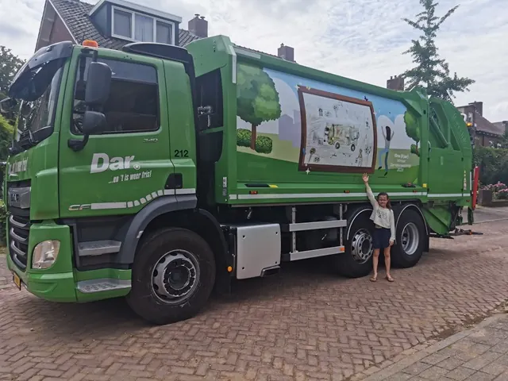

Nieuws ·
Vierde editie Week van de Helden in het afval en het groen

Medewerkers Dar in zonnetje van 4 tot en met 10 maart 2024
Ze zijn vaak te zien in onze straten, parken en in het centrum: de medewerkers in het afval en groen van Dar. Ze halen ons afval op en houden onze leefomgeving schoon en netjes. De mannen en vrouwen van Dar zijn onmisbaar, vakkundig en terecht trots op hun werk. Van 4 tot en met 10 maart is het de week van de Helden in het afval en het groen: het perfecte moment om deze harde werkers eens extra in het zonnetje te zetten. In deze week organiseert Dar voor haar medewerkers verschillende activiteiten, maar roept ook inwoners uit de Dar-regio op ook mee te doen en waardering te uiten.
Doe ook mee en uit waardering
Dar roept inwoners op om ook mee te doen en hun dank en waardering te tonen. Bijvoorbeeld door kleurplaten voor het raam te hangen of een (Digitaal) kaartje te sturen. Of door gewoon eens een duim op te steken of te zwaaien als blijk van waardering. Kinderen kunnen ook meedoen door de speciale kleurplaat in te kleuren en voor het raam te hangen, op een afvalzak of container te plakken. Een kleurplaat aan een medewerker in de wijk geven, is natuurlijk helemaal leuk.
De Dar-medewerkers in het afval en groen kijken ernaar uit!
Tekenwedstrijd: winnende tekening op inzamelwagen
Alle kinderen uit de regio kunnen ook dit jaar weer meedoen aan een tekenwedstrijd. Maak een mooie tekening voor de Dar-medewerkers en stuur deze (met naam, leeftijd adres en contactgegevens) naar Dar via info@dar.nl of per post (antwoordnummer 2310, 6500 WC Nijmegen). Afgeven bij het Dar-kantoor op de Kanaalstraat 401 in Nijmegen kan ook. De mooiste tekening komt op een inzamelwagen van Dar. Een Dar-chauffeur komt met deze inzamelwagen bij de winnaar op bezoek. Zo kan de winnaar de tekening op de wagen bewonderen.
Helden met een hoofdletter H
De NVRD, de Vereniging Afvalbedrijven en het O&O Fonds GEO vinden eigenlijk dat iedereen in de afvalsector dagelijks waardering verdient. Daarom houden zij ieder jaar een week van de Helden. Helden met een hoofdletter H, want dat zijn ze. Onder een Held verstaan zij iedereen die zich dagelijks in de praktijk inzet in de hele afvalketen. De chauffeur die zich met een inzamelwagen een weg door een drukke stad weet te banen. De veegmachinist die de straten schoonhoudt. De belader die zorgt dat al het afval op de juiste manier in de wagen gaat. De groenmedewerker die het groen onderhoudt. En met hen nog vele anderen!
Kennis en professionaliteit
Bijna 30.000 vakmannen en vakvrouwen houden de straten schoon, halen dagelijks het afval op en onderhouden het groen. Op deze manier dragen zij allemaal bij aan een groene, schone, frisse stad en daarmee een betere en schonere wereld en circulariteit. Zoals hergebruik van grondstoffen. Dat doen ze met veel kennis en professionaliteit. Medewerkers in de afvalbranche zijn onmisbaar voor de volksgezondheid en het draaiend houden van Nederland. Hun belangrijke werk verdient onze waardering.
Meer informatie over de Week van de Helden in het afval en het groen en downloaden kleurplaat: www.dar.nl/helden